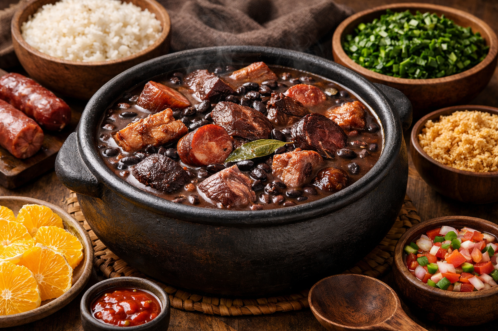

Favoritos

Deixe a carne seca de molho por algumas horas, trocando a água para retirar o excesso de sal. Em uma panela, cozinhe o feijão com as folhas de louro até começar a ficar macio. Em outra panela, refogue o bacon, a cebola e o alho até dourarem, depois adicione a linguiça e a costelinha e deixe fritar levemente para intensificar o sabor.
Em seguida, misture as carnes ao feijão e deixe cozinhar tudo junto em fogo baixo até o caldo engrossar e os sabores ficarem bem incorporados. Ajuste o sal e a pimenta, mexa de vez em quando para não grudar no fundo e cozinhe até atingir a consistência desejada. Sirva quente, acompanhado de arroz, farofa e couve.